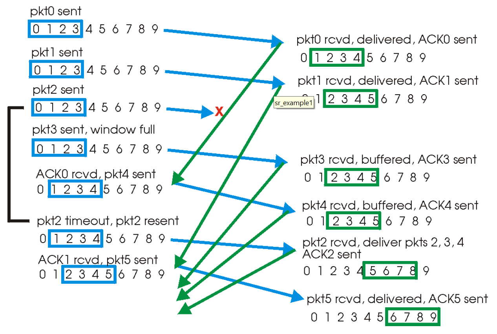
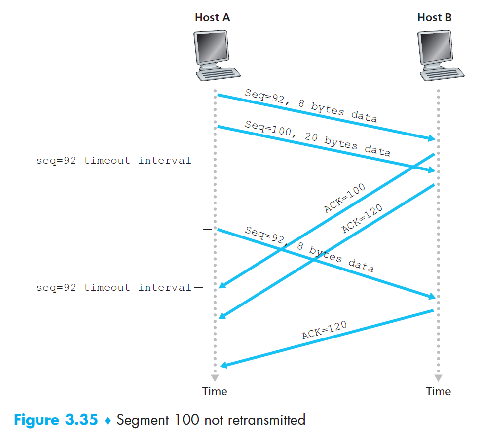
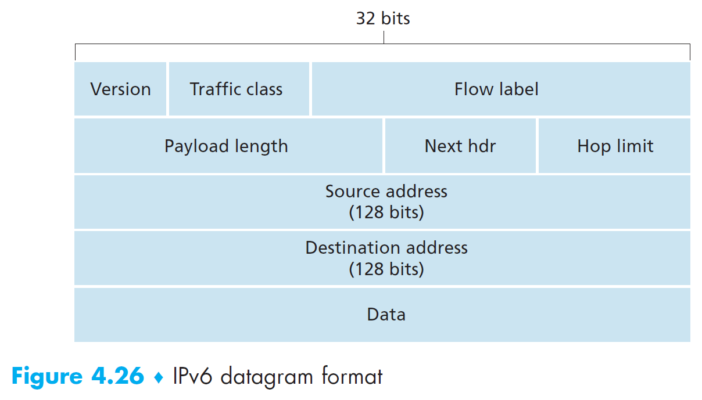
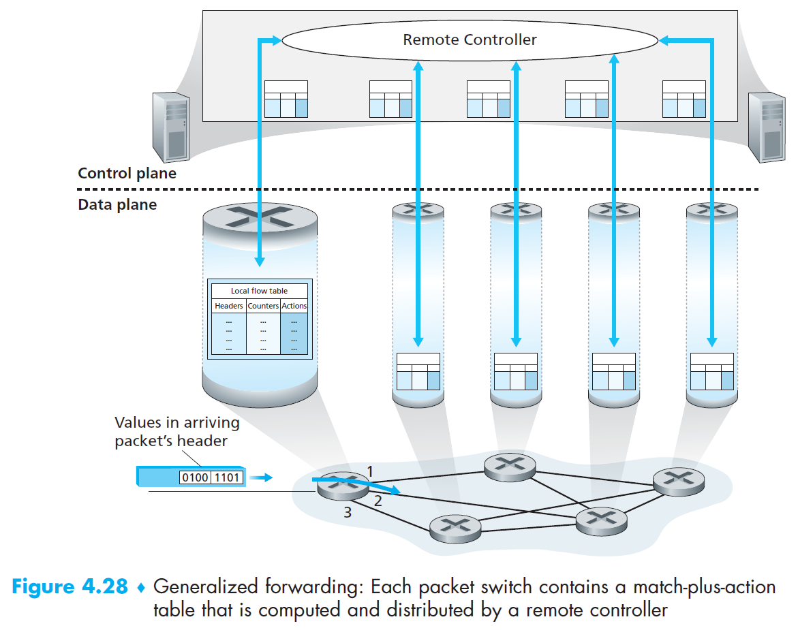
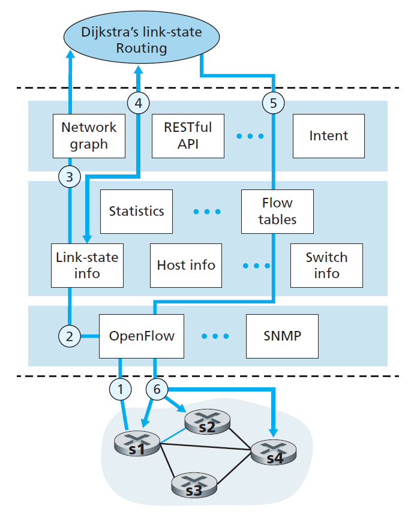

Computer Networks¶
Ch1 Computer Network and the Internet¶
The Network Edge¶
- end system = host
- client
- server
- CO = central office
- transmission
- simplex
- one direction
- like webinar
- half duplex
- one direction at a time
- like
- full duplex
- both direction at the same time
- like
- simplex
access networks¶
residential access networks¶
DSL, digital subscriber line¶

- xDSL, x=A, S, H, V etc.
- point to point
- share DSL link with telephone signals at the same time through FDM
- high-speed downstream
- 50kHz-1MHz
- medium-speed upstream
- 4kHz-50kHz
- ordinary two-way telephone
- 0-4kHz
- downstream upstream speed different asymmetric
- use telco's existing local telephone infrastructure
- high-speed downstream
- DSLAM, digital subscriber line access multiplexer
- CO side
- AD convert
- separate the data & telephone signals
- send the data to DSL modem
- splitter
- customer side
- separate the data & telephone signals
- send the data to the Internet
- for short distance
- 5-10 miles
HFC, hybrid fiber coax¶
- use cable TV's existing infrastructure
- use fiber optics to reach neighborhood-level junctions
- use coaxial cable to reach individual houses
- cable modem
- connect to home PC through Ethernet port
- CMTS, cable modem termination system
- like DSLAM
- AD convert
- FDM
- asymmetric
- downstream > upstream
- asymmetric
- shared broadcast medium
- download broadcastupload multiple-access
FTTH/FTTC/FTTB¶
- FTTH, fiber to the home
- fiber
- FTTB, fiber to the curb
- fiber
- AON, active optical network
- switched Ethernet
- PON, passive optical network
- each home has ONT
- splitter
- connect many homes to one optical fiber, connect to telco's CO's OLT
- all packets sent from OLT are replicated in the splitter
- OLT, optical line terminator
- optical & electrical signals conversion
- connect to the Internet via a telco router
- ONT, optical network termination
- home user connects a home router to ONT, and access the Internet via the home router
satellite link¶
Starband, HughesNet
company access networks¶
- LAN, local access networks
- connect end system to edge router
- Ethernet
- twisted-pair copper wire
- connect to an Ethernet switch
- Wireless LAN
- IEEE 802.11a/b/g (WiFi)
- Ethernet wireless version
- user exchange packets with an access point connected into enterprise's network through wired Ethernet
- IEEE 802.11a/b/g (WiFi)
mobile access networks¶
- wide-area wireless access
- kms
- same wireless infrastructure as cellular telephony
- cellular system
- xG
- generation
- LTE, long-term evolution
- xG
- wireless local loop (?)
physical media¶
guided media¶
- solid medium, physically wired
- installation cost >> material cost
- twisted-pair copper wire
- simple, low cost, low bit rate, short range
- telephone networks, LANs, residential Internet access
- RH-45 ()
- UTP, unshielded twisted pair
- LANs
- coaxial cable
- copper
- cable TV
- fiber optics
- conduct pulses of light
- 1 pulse = 1 bit
- very high bit rates
- immune to electromagnetic interference
- secure
- smaller, lighter
- low signal attenuation, great capacities
- used in long distance links
- high cost
- optical devices
- conduct pulses of light
unguided media¶
- in atmosphere & outer space, with antenna
- download broadcastupload multiple-access
terrestrial radio channels¶
- via electromagnetic spectrum
- penetrate walls, long distance
- greatly dependent on environment & distance
- by operating area
- very short distance
- personal devices
- local area
- wireless LAN
- wide area
- cellular access
- very short distance
satellite radio channels¶
- link between ground stations
- receive in one frequency, repeat the signal, transmit in another frequency
- GEO, geostationary earth orbit
- 3
- substantial propagation delay
- LEO, low earth orbit
- may communicate with each other
- Teledesic
- SpaceX Starlink
The Network Core¶
packet switching¶
- long messages small packets through communication links & packet switching
- middleman
- routers
- link-layer switches
- store-and-forward transmission
- receive the entire packet transmit
- store/buffer the bits until the entire packet is received
- forward/transmit the packet onto the outbound link
- delay (see Delay Loss Throughput)
- a packet of \(L\) bits (L=packet length)
- transmission rate \(R\) bits/s (R=link bandwidth)
- can store & forward at the same time with the same rate
- P packets, 1 router
- \(delay=(P+1)\dfrac{L}{R}\)
- 1 packet, N links, N-1 routers
- \(delay=N\dfrac{L}{R}\)
- queuing delays
- want to transmit but the outbound link is busy (congestion) wait in output buffer/queue
- packet arrives to full buffer packet loss
- arriving packet or queued packets will be dropped
- forwarding
- packet's header has target IP
- forward table
- map destination addresses to outbound links
- set with routing protocols
- scheduling
- FIFO queue, first in first out
- simple but limited
- round robin
- FIFO queue, first in first out
circuit switching¶
- https://eng.libretexts.org/Bookshelves/Computer_Science/Networks/Book%3A_An_Introduction_to_Computer_Networks_(Dordal)/03%3A_Other_LANs/3.04%3A_Virtual_Circuits
- e.g.
- C comes from port 2 in S1 port 3 VCI 2 out S2 get VCI 2 from port 1 out port 3 VCI 2 S3 get VCI 2 from port 1 out port 3 B
- resources reserved
- in contrast with the queuing method in #packet switching
- transmission not guaranteed to succeed
- like reserving a seat
- want to communicate network establish end-to-end connection
- in contrast with the queuing method in #packet switching
- multiplexing
- FDM, frequency-division multiple
- 1 frequency band for each connection
- each circuit get a fraction of the bandwidth continuously
- TDM, time-division multiplexing
- 1 time slot for each connection
- each circuit get all of the bandwidth periodically
- statistical multiplexing
- use statistical laws
- FDM, frequency-division multiple
packet switching vs. circuit switching¶
- trend: packet switching
- packet switching
- pros
- better sharing of transmission capacity
- simpler
- more efficient
- in idle case
- allocates link on-demand
- less costly
- cons
- not suitable for real-time services
- variable & unpredictable end-to-end delays
- queuing delays
- variable & unpredictable end-to-end delays
- best-effort service
- no guarantee
- not suitable for real-time services
- pros
- circuit switching
- pros
- reliable transport
- guaranteed delivery
- reliable transport
- cons
- circuit is idle during silent periods waste
- transmit data
- many allocated but unneeded link time
- complicated
- establish end-to-end circuits
- reserve end-to-end transmission capacity
- coordinate the operation of the switches along the end-to-end path
- circuit is idle during silent periods waste
- pros
a network of networks¶
- interconnect access ISPs s.t. all end systems can send packets to each other
- structures
- Network Structure 1
- 1 global transit ISP, connect all access ISPs
- Network Structure 2
- multiple global transit ISPs, connect all access ISPs
- Network Structure 3
- tier-1 ISPs
- e.g. AT&T
- pay no one
- not 100% global
- regional ISPs
- pay tier-1 ISP
- some has hierarchical regional ISPs
- e.g. China
- access ISPs
- pay regional ISP
- tier-1 ISPs
- Network Structure 4
- mult-tier hierarchy (based on Network Stucture 3)
- PoPs, points of presence
- interface in provider's network for customer's network to connect into
- consist of routers
- exist everywhere except the bottom level
- e.g.
- multi-home
- connect to more than 1 higher level ISPs
- e.g. an access ISP multi-home with 2 regional & 1 tier-1 ISPs
- will survive when 1 provider dies
- connect to more than 1 higher level ISPs
- peer
- 2 nearby same-level ISPs connect directly to send data, instead of paying provider ISP
- settlement free i.e. none pays
- tier-1 ISPs peer
- IXP, Internet Exchange Point
- third-party company
- provide a meeting point for multiple ISPs to peer
- standalone building with its own switches
- Network Structure 5
- based on Network Structure 4
- content-provider networks
- e.g. Google, Amazon, Netflix
- data centers are interconnected privately, separated from the public Internet
- peer with lower-tier ISPs
- directly or through IXP
- settlement free reduce payment to upper-tier ISPs
- connect to tier-1 ISPs
- pay
- Network Structure 1
Delay, Loss & Throughput¶
reliability¶
- error-free
- error
- in-sequence
- no duplication
- no loss
- error-free
- failure
- bit level
- wired \(10^{-12}\)
- wireless \(10^{-5}\)
- packet level
- node/link level
- power off
- virus
- bit level
QoS, quality of service¶
- error rate
- delay
- delay jitter
- variance of delay
- packet delay
- delay jitter
- throughput
- data transfer rate between sender & receiver
- instantaneous rate
- client bits/sec
- average rate
- determined by the min rate link
- common link
- \(min(R/10,R_1,R_2,....,R_{10})\)
delay/latency¶
- one-way delay
- RTT, round trip time
- to (ack)
- one-hop delay / total nodal delay
- the delay at a single router
- \(d_{nodal} = d_{proc}+d_{queue}+d_{trans}+d_{prop}\)
- transmit in process queue transmit out propagate
- processing delay
- examine packet's header and determine which link to direct to
- check for bit-level errors in the packet
- often negligible in total nodal delay
- influence a router's max throughput
- queuing delay
- traffic intensity = La/R
- a packets per second
- > 1 queue increases average queuing delay approaches \(\infty\)
- 1 packet every L/R no delay
- N packets every NL/R significant delay
- packet arrives at full queue packet poss
- traffic intensity = La/R
- transmission delay / store-and-forward delay
- L = packet length (bits)
- R = link bandwidth (bps)
- \(d_{trans}=\frac{L}{R}\)
- propagation delay
- link link
- d = link.length()
- s = propagation speed ~ \(2\times 10^8m/s\)
- \(d_{prop}=\frac{d}{s}\)
- end-to-end delay
- total delay from source to destination
- \(d_{end-end}=N(d_{proc}+d_{trans}+d_{prop})\)
- message segmenting
- 1 packet 1ms,
- take 1ms x 5001
Protocol Layers¶
- layered architecture
protocol layering¶
5-layer model (the Internet)¶
application layer¶
- e.g. HTTP(web documents), SMTP(emails), FTP(files), DNS
- message - application-layer packet
- exchange message with the application in another end system
transport layer¶
- layer 4
- transport messages between application endpoints
- 2 protocols in the Internet
- TCP
- connection-oriented
- guaranteed delivery of messages
- flow control (sender/receiver speed matching)
- breaks long messages into shorter segments
- congestion control
- UDP
- connectionless
- no reliability
- no flow control
- no congestion crontrol
- TCP
- segment - transport-layer packet
network layer¶
- layer 3
- IP layer
- datagrams - network-layer packet
- packet
- deliver the segment to destination's transport layer
- IP protocol
- routing protocols
- determine the route datagrams take between source & destination
- forwarding
link layer¶
- layer 2
- move a packet from one node to another
- get datagrams from network layer, deliver to next node, pass up to its network layer
- a datagram may be handled by different link-layer protocols at different link along the route
- e.g. Ethernet, WiFi, DOCSIS
- frame - link-layer packet
physical layer¶
- layer 1
- move the individual bits in the frame from one node to another
- protocols depend on link & transmission medium of the link
ISO OSI 7-layer model¶
- 2 additional layers ( application layer)
- presentation layer
- provide services for communicating applications to interpret the meaning of data exchanged
- data compression
- data encryption
- data description
- resolve the different formats between different computers (???)
- provide services for communicating applications to interpret the meaning of data exchanged
- session layer
- delimiting & sync of data exchange
- build a checkpointing & recovery sheme
- conference call
- video+audio+text
- presentation layer
- data link layer
- LLC, logical link control
- MAC, media access control
- IETF TCP/IP protocol stack/suite
encapsulation¶
- PDU, packet data union
- header + data/payload
- header
- header
Network Security¶
the Internet was originally designed on the concept of
a group of mutually trusting users attached to a transparent netowrk
so there're many security problems now
malware¶
- self-replicating
- host host host
- virus
- infect user's device through user interaction
- worm
- infect user's device without explicit user interaction
DOS, denial-of-service attack¶
- make things unusable
- methods
- vulnerability attack
- send few well-crafted messages
- bandwidth flooding
- send a lot of packets target's access link clogged legitimate packets can't enter
- DDOS, distributed DOS attack
- use botnets (many controlled hosts) to send traffic to the target
- don't need huge traffic for each source
- harder to detect and defend against
- connection flooding
- establish a lot of half-open or fully open TCP connections at target connection bogged target stops accepting legitimate connections
- vulnerability attack
packet sniffer¶
- a passive receiver copying every packet transmitted
- wireless or wired environment
- passive, don't inject packets hard to detect
- solution
- cryptography (Ch8)
IP spoofing¶
- send packet with fake source address with malicious contents
- solution
- end-point authentication (Ch8)
- check if the source address is correct
- end-point authentication (Ch8)
miscellaneous¶
- connections
- link, node, cloud
- direct link
- LAN, local area network
- types
- point to point
- simple
- bad scalability
- multiple access
- MAC, multiple access control
- point to point
- indirect link
- circuit switching
- packet switching
- logical channel??
- telecom
- ATM, Asynchronous Transfer Mode
- from telephone
- philosophy
- datacom
- the Internet
- philosophy
- whatever
Ch2 Application Layer¶
principles¶
architectures¶
- client-server
- single server
- may be overwhelmed
- data center
- many hosts
- client don't communicate with each other directly
- single server
- P2P
- server
- sender
- wait to be contacted
- client
- initiator
- receiver
- self-scalability
- decentralized security, performance, reliability issues
- e.g.
- skype, bittorrent
- server
- hybrid
- e.g. instant messaging apps
- server to track user IPs
- direct messages with P2P
- e.g. instant messaging apps
process communicating¶
- processes in different hosts connect with each other across the computer network
- browser process initiates contact with web server
- browser is the client
- socket
- interface between #application layer & #transport layer
- #transport-layer protocols
- process socket transport layer
- API between application & network
- port number for identifying which process in the host to send to
- 80 web server
- 25 mail server
- interface between #application layer & #transport layer
transport-layer protocols¶
- possible qualities
- data integrity
- reliable data transfer
- no data loss
- no duplication
- in sequence
- some apps need guaranteed delivery
- mail, file transfer
- some is loss-tolerant
- multimedia
- reliable data transfer
- throughput
- some have throughput requirement (bandwidth-sensitive)
- multimedia
- some are elastic
- some have throughput requirement (bandwidth-sensitive)
- timing
- some need low delay
- real-time apps
- some need low delay
- security
- encryption, data integrity etc.
- data integrity
- differential coding
- video
- 2 frames,
- frame
- multimedia UDP
TCP¶
- provide
- connection-oriented
- handshaking before communicating
- exchange infos
- full-duplex connection
- handshaking before communicating
- reliable transport
- #Automatic Repeat reQuest ARQ
- ACK reliable but slow
- #Automatic Repeat reQuest ARQ
- congestion control
- sender
- give alternate route
- congestion control solves congestion; admission control prevents congestion
- flow control
- receiver overwhelmed
- receiver
- between a pair of sender & receiver
- receiver overwhelmed
- connection-oriented
- does not provide
- timing
- min throughput guarantee
- security
- TCP socket
- header bc
- 3-way handshaking
UDP¶
- does not provide anything
- multimedia
- Skype
- many firewalls block UDP
video streaming¶
streaming protocols¶
HTTP streaming¶
- one version of video, stored in an URL
- TCP connection
- client GET for the video URL
- server sends -> client collects bytes in buffer -> exceeds threashold -> playback
- app periodically get frame from buffer -> decompress -> display
- cons
- only one version, clients with different bandwidths still use the same video
DASH streaming¶
- Dynamic Adaptive Streaming over HTTP
- many versions of videos
- different bit rates i.e. different quality
- stored in different URL
- manifest file
- URL for each version of video
- client requests manifest file first
- client requests chunks of video segments, quality depends on current bandwidths
- measures the received bandwidth and runs rate determination algorithm to select next chunk
- pros
- allows client to freely switch between different quality levels of videos
- important for mobile users
- allows client to freely switch between different quality levels of videos
Content Distribution Networks (CDN)¶
- if use a single massive data center
- more likely to have lower throughputs
- end-to-end throughput depends on bottleneck link
- client far from data center -> cross many communication links
- a video may be sent many times over the same link
- single point of failure
- more likely to have lower throughputs
- Content Distribution Networks (CDN)
- multiple geographically distributed servers
- direct user to best CDN
- types of CDN
- private CDN
- content provider's own CDN
- third-party CDN
- distributes content for multiple content providers
- private CDN
- server placements philosophies
- enter deep
- get close to users
- highly distributed
- lower delay & higher throughput
- hard to manage & maintain
- bring home
- a few large clusters
- more centralized
- higher delay & lower throughput
- easier to manage & maintain
- enter deep
- pull strategy
- basically cache
- get video and store a copy when requested
- remove not frequently requested videos when storage full
CDN operation¶
intercept & redirect request¶
- suppose content provider NetCinema uses KingCDN to distributes its videos
- user visit NetCinema.com
- user click video link, user host sends DNS query for NetCinema.com to LDNS
- LDNS passes DNS query to NetCinema authoritative DNS, which returns a hostname in KingCDN domain
- LDNS sends query for xxx.kingcdn to KingCDN DNS, which return the IP of King CDN content server
- LDNS passes IP to user host
- client establishes TCP connection with the IP and sends GET request
cluster selection strategy¶
- direct client to a server cluster or data center within CDN
- select geographically closest to LDNS
- cons
- may not be the shortest network path or path with fewest hop
- some users may use remote LDNSs
- ignore variation of path over time
- cons
- real-time measurements
- CDN cluster periodically send probes (e.g. ping) to all LDNSs
- cons
- many LDNSs don't respond to probes
case study¶
Netflix¶
- runs on Amazon cloud
- upload original videos to Amazon cloud
- software on Amazon cloud create different versions of videos
- software on Amazon cloud upload versions of videos to CDN
- private CDNs
- support DASH
- push videos to CDN servers during off-peak hours
- doesn't use pull-caching (pull on demand and cache)
- big server racks contain all entire library
- small server racks contain only popular videos
- select a video -> Netflix on Amazon cloud finds CDN servers with that video -> select the best one -> sends client server IP & manifest file -> client & CDN server interacts with DASH
- don't need DNS to redirect to CDN server
Youtube¶
- use pull-caching
- use DNS redirect
- select CDN cluster with lowest RTT
- not always (for load balancing)
- use HTTP streaming, not DASH
- requires user to select a version
- client upload to server over HTTP
- Google data center converts to Youtube format & create multiple versions
Kankan¶
- (???)
- P2P
- similar to BitTorrent
- request chunks of video from other peers that have the video
- not using CDN because CDN is costly
- hybrid CDN-P2P
- request beginning of contents from CDN servers
- short start-up delay
- if P2P is enough, only streams from peers
- reduce cost
- if P2P isn't enough, use hybrid CDN-P2P
- request beginning of contents from CDN servers
Ch3 Transport Layer¶
intro¶
- network laryer: host 2 host
- transport layer: process 2 process
- UDP
- max 65535 = 2^16-1
- mss: maximum segment size
reliable data transfer¶
- difficulties
- the layer below may be unreliable
- assumption
- packets sent (from below) won't be out of order
- properties
- no error
- no loss
- in sequence
- no duplication
- acknowledgment
- positive ACK
- negative NAK
- retransmission
error detection (brief)¶
- see error detection
- parity check
- even or odd number of 1s
- 2D parity check
- like
- row & column intersection
- Internet checksum
- procedure
- 2 16 bits
- overflow least significant bit
- sum 1's complement checksum
- 0 1
- sum = receiver sum sender checksum
- 1 correct
- bc complement
- need to carry
- 1 correct
- checksum = complement of sum
- procedure
Automatic Repeat reQuest (ARQ)¶
- states
- stop & wait
- resend when
- timeout ACK
- corrupted ACK
- NAK
- problems
- ACK transmission
- propagation delay
- a = propagation delay/transmission delay
- a > 1
- propagation transmission bad utilization of
- a < 1
- transmit propagate
- sol: #sliding window protocol
- resend when
alternating-bit protocol¶
- stop & wait but bit sequence number
- 0 or 1
- or packet
- number
- number
- receiver duplicate ACK but
- lost packet & lost ACK sender
sliding window protocol¶
Go Back N (GBN)¶
- nice interactive visualization
- sequence number
- 3 bit 0-7
- sender
- window size N ACK slides
- timeout ACK resend window
- timer windows
- receive acknum+1 = nextseqnum active packetso timer
- receiver
- cumulative ACK
- maintain ACK
- ACK n n
- ACK
- out of order but ACK
- cumulative ACK
- ACK i <=i
- problems
- 1 23456 resend all but
- sol: #Selective Repeat SR
- 1 23456 resend all but
Selective Repeat (SR)¶
- sender & receiver sliding window
- out of order store
- in order slide
- sender
- timeout packet packet (selective repeat)
- receiver
- windows but packet ACK
- 
- problem
- window size sequence number
- differentiate repeated new
- window size sequence number
congestion control¶
- congestion packet loss retransmission waste resources
- if a packet has traveled through many routers, but dropped due to congestion, the work done by previous routers is lost
- multimedia broadcasting congestion control
- band
approaches¶
- end-to-end congestion control
- network layer doesn't provide feedback
- TCP uses it
- TCP detect congestion with segment loss or RRT increases decrease window size
- network-assisted congestion control
- routers provide feedback
- if congestion, do:
- send choke packet
- modify a field in the packet
- if congestion, do:
- ATM Available Bit Rate (ABR)
- router tells sender the max bit rate supported
- recent IP/TCP can implement it as well, tho still uses end-to-end as default
- routers provide feedback
UDP¶
- UDP checksum
- error recovery
- some discard corrupted part
- some goes on with a warning
- error recovery
- RFC 768
- chrome UDP protocol
- connection state
- segment
- header size fixed
TCP¶
TCP segment¶
- header size not fixed
- window size not fixed
- flow control
- UAPRSF
- 0 or 1 each
- URG = urgent
- Urg data pointer: urgent data
- ACK
- PSH = push
- RST = reset
- SYN
- 1 to start connection
- see #TCP connection management
- FIN
- 1 to end connection
- see #TCP connection management
- Internet checksum
- rdf
- sender maintain sliding window
- receiver maintain expected next byte (seq. num)

RTT & Timeout¶
Estimated RTT¶
- RTT = round trip time
- time from data sent to ACK received
- SampleRTT = the RTT of the newly received ACK
- won't measure retransmissions
- measured about once every RTT
- \(EstimatedRTT = (1-\alpha)\cdot EstimatedRTT+\alpha\cdot SampleRTT\)
- EWMA for SampleRTT
- weight of a SampleRTT decays exponentially fast (\((1-\alpha)^n\) for n before)
- recent ones are more important
- weight of a SampleRTT decays exponentially fast (\((1-\alpha)^n\) for n before)
- recommend \(\alpha=0.125\) per RFC 6298
- RTT & RTT (sample RTT)
- EWMA for SampleRTT
- EWMA, exponential weighted moving average
- something that takes the form of \(Y_{EWMA} = (1-\alpha)\cdot Y_{EWMA}+\alpha\cdot Y_{instantaneous}\)
- \(DevRTT = (1-\beta)\cdot DevRTT+\beta\cdot |SampleRTT-EstimatedRTT|\)
- variability of SampleRTT from EstimatedRTT
- EWMA of the difference of SampleRTT & Estimated RTT
Timeout¶
\(TimeoutInterval = EstimatedRTT+4\cdot DevRTT\) - timeout interval should > Estimated RTT, and the more fluctuating RTT is, the bigger the margin - TimeoutInterval will double after timeout, follow the formula again after receiving next segment - exponential backoff
reliable data transfer¶
- #network layer isn't reliable
- timeout
- single timer
- oldest unACKed segment
- timeout retransmit the segment causing the timeout restart timer
- single timer
cumulative ACK¶
- hybrid of #Go Back N GBN & #Selective Repeat SR
- receiver ACK the ==next bit== to be received
- differences with GBN
- TCP will buffer out-of-order segments
- TCP uses cumulative ACK
- 1 : N segment all received by receiver, ACK k lost while other received by sender GBN resend segment k : N while TCP resend segment k or none (if receive ACK #>k before timeout k)
- differences with SR
- TCP won't individually ACK out-of-order segments
- TCP only maintains the smallest-seq-no (oldest) unACKed byte
- selective ACK (SACK) - a modified ACK
- ACK out-of-order segments selectively
- a lot like SR
SendBase= the seq # of oldest unACKed segmentNextSeqNum= next byte to be sent- receive ACK compare ACK # with
SendBase - no negative ACK
- always ACK the last in-order byte received
- even if receive non-in-order byte or duplicate byte
- cumulative ACKs
- receive ACK y = ACK all segment <= y
- y >
SendbaseACK many unACKed segments
- if receive many consecutive segment, send ACK when 500ms without next one
- receive segment #92 with 8 bytes of data ACK 100
- e.g.
- B will discard the retransmission
- 
- (Host A) send #92 send #100 #92 timeout resend #92 & restart timer ACK for #100 arrive within new timer accept and don't resend
- (Host B) receive duplicate segment ACK the received newest bytes = 120 120 bytes including segment #92
- ACK 120 120 bytes
exponential backoff¶
- timeout double timeout interval
- receive data from application above OR receive ACK use the timeout formula again to set timeout inteval
- provide some congestion control
- congestion packet dropped or long queue the timeout many timeout, and retransmitting will worsen the congestion set timeout interval longer, retransmit in a lower rate
fast retransmit¶
- sender often sends many segments consecutively if 1 segment lost, receiver will send many duplicate ACKs (bc it always ACK the last in-order byte received)
- receive 3 duplicate ACKs retransmit the segment following the duplicate ACK seq No., without waiting to timeout
flow control¶
- make sending rate <= receiving rate
- receiver ACL sender sliding window (buffer space)
rwnd= how much buffer space left for receiver- receiver places
rwndinreceive windowfield in segments sending to sender - sender keeps total bytes of unACKed data <
rwnd
i.e. data < receiverLastByteSend - LastByteAcked <= rwnd
- sender receiver
- sender last known
rwnd= 0 receiver buffer- otherwise if receiver send sender ACK receiver buffer buffer 0
TCP connection management¶
- SYN flood attack
- request connection ACK
- TCP 3-way handshake
- client send a segment to server
- header
- SYN <- 1
- seq <-
client_isn= rand()
- payload
- none
- header
- server allocates resources for the connection, and sends a connection-granted segment i.e. SYNACK segment to client
- header
- SYN <- 1
- ack <-
client_isn+1 - seq <-
server_isn(chosen)
- payload
- none
- header
- client allocate resources for the connection, and sends an segment to ACK server's connection-granted segment
- header
- SYN = 0
- seq <-
client_isn+1 - ack <-
server_isn+1
- payload
- may put data
- header
- client send a segment to server
- resources
- buffers
- variables
- after the 3-way handshake, each segment header's
SYN= 0, and can contain payload with data - termination
- client sends a segment with
FIN= 1 - server ACKs
- server sends a segment with
FIN= 1 - client ACKs
- deallocates resources on both ends
- client sends a segment with
- TCP states
- receiver
- sender
- receiver
- if server receives a packet requesting an unavailable port
- if it's a TCP SYN packet, server will send a reset segment with
RST=1, telling client not to resend the segment - if it's a UDP packet, server will send an ICMP datagram
- if it's a TCP SYN packet, server will send a reset segment with
congestion control¶
brief¶
- use congestion window to limit the sending rate
- sender keeps total bytes of unACKed data (data transmitting) <
min(cwnd, rwnd)LastByteSend - LastByteAcked <= min(cwnd, rwnd)
- bandwidth probing
- network congestion rate sending rate
- receive ACK increase
cwnd(self-clocking) - loss event (timeout OR 3 duplicate ACKs) decrease
cwnd- ACKs come quickly
cwndincreases quickly
- ACKs come quickly
TCP congestion-control algorithm¶
- Slow Start
- come to this state whenever timeout
- initial
cwnd = 1 MSS(max segment size), which is very smol - receive 1 ACK
cwnd += 1 MSS-
cwndgrows exponentially- send 1 receive 1 send 1+1 receive 2 send 2+2 receive 4 etc.
-
- timeout
ssthresh = cwnd/2&&cwnd = 1 MSSssthresh= slow start threshold
cwnd == ssthreshgo to Congestion Avoidance statebeq cwnd, ssthresh, Congestion Avoidance- when
cwndgrows to 1/2 of the last time timeout occurs
- receive 3 duplicate ACKs
ssthresh = cwnd/2&&cwnd = ssthresh + 3 MSS&& fast restransmit && go to Fast Recovery state
- Congestion Avoidance
- same as Slow Start except
cwnd += MSS*(MSS/cwnd)for each ACK received
i.e.cwnd += 1 MSSfor each RTT- will receive
cwnd/MSSACKs each RTT
- will receive
- timeout go to Slow Start
- receive 3 duplicate ACKs
ssthresh = cwnd/2&&cwnd = ssthresh + 3 MSS&& fast restransmit && go to Fast Recovery state
- same as Slow Start except
- Fast Recovery
- optional state
- if don't use this state, then both timeout & 3 duplicate ACKs go to Slow Start
- come to this state whenever 3 duplicate ACKs
- receive duplicate ACK
cwnd += 1 MSS- segment
- receive new ACK
cwnd = ssthresh&& go to Congestion Avoidance - timeout
ssthresh = cwnd/2&&cwnd = 1&& go to Slow Start - a recommended pero no es necesario state
- timeout go to Slow Start
- optional state
- FSM state change
- versions
- TCP Tahoe: no Fast Revcovery State
- TCP Reno: has Fast Revcovery State
- fair
- TCP Vegas
- detect congestion before packet loss lower the rate linearlt
- detect with observing RTT
- no es fair
- detect congestion before packet loss lower the rate linearlt
- additive-increase, multiplicative-decrease, AIMD
TCP throughput¶
?
TCP fairness¶
- TCP Reno es muy muy fair
- for 2 competing connections
Network Layer¶
intro¶
- routing
- to send
- = shortest path
- min hop count
- max reward
- min cost
- reinforcement learning
- forwarding
- router
- input link interface to output link interface
- forwarding table
- IP 32 bits forwarding table max \(2^{32}\) entries
- source to destination path
- indicate outgoing link interface
- control plane
- physically separated from router
- computes & distributes forwarding tables
- SDN, software-defined network
- data plane
- control plane forwarding table forwarding
- datagram
- best effort
- ATM
- virtual circuit
- guaranteed in-order, bounded delay ( delay ), minimal bandwidth
- source to destination path
- datagram vs. virtual circuit
Data Plane¶
router¶
input port¶
- terminate incoming physical link
- perform necessary link-layer function to interoperate with the link layer at the other side of the incoming link
- lookup - use forwarding table to determine output port
- forwarding table copied from routing processor forwarding decisions made locally at input port
- destination based forwarding
- longest prefix matching
- prefix forward
- prefix ()
- e.g.
- bits subnet id
- longest prefix matching
- send to switching fabric send to specified output port
- switching speed not fast enough input zqueue
- head-of-the-line (HOL) blocking
- packet destined output port output port
- head-of-the-line (HOL) blocking
switching fabric¶

- switching via memory
- packet copied from input port to routing processor memory routing processor extract destination address and lookup forwarding table copy to output port buffers
- 1 read/write action at a time (for a bus)
- in modern routers, the above is done by input port
- switching via a bus
- input port transfers a packet directly to output port via a shared bus
- skip routing processor
- label the output port, all output port receives the packet but only the destined one keep it
- switching speed limited by bus speed
- max 1 packet crosses the bus at a time
- input port transfers a packet directly to output port via a shared bus
- switching via an interconnection network (crossbar)
- to overcome the bandwidth limitation of a single shared bus
- can forward multiple packets in parallel
- but 1 for an output at a time
- non-blocking
- need to wait if more than one packet destined at 1 output port
output port¶
- perform necessary link-layer & physical-layer functions
- if bidirectional paired with input port
- switching speed > line speed output queue
- discard policy
- tail drop
- drop arriving packet
- AQM, active queue management
- drop before full
- RED, random early drop
- buffer packet drop
- tail drop
- buffer size
- B = RTT x C (link capacity) generally
- discard policy
packet scheduling¶
- the order of the output of queue
- FIFO, first-in-first-out
- or FCFS, first-come-first-serve
- priority queuing
- packets classified into priority classes
- maintain FIFO queues for each priority class, lower priority won't be send until higher priority's queue is emptied
- non-preemptive priority queuing
- packet transmission won't be interrupted once started
- round robin
- packet classified into classes
- transmission alternate between classes
- e.g. class 1 class 2 class 3 class 1 class 2 and so on and so forth
- queue
- work-conserving queuing
- this class queue is empty immediately go to the next class queue
- weighted fair queuing, WFQ
- generalized round robin
- alternative circularly between classes but each class has weight
- guaranteed a fraction of service (the fraction of weight to total weight) in any interval of time
routing processor¶
- perform control plane functions
- in traditional router
- maintain routing table
- attach link state info
- compute forwarding table and copy to input ports
- in SDN router
- communicate with remote controller, get forwarding table
- copy forwarding table to input ports
- perform network management functions
IPv4¶
datagram format¶

- version number
- IP protocol version
- how to interpret this datagram
- header length
- to know where payload begins
- without options 20-byte
- TCP header 20-byte IP+TCP header 40-byte
- type of service, TOS
- distinguish different type of IP datagrams
- datagram length
- total length
- identifier, flags, fragmentation offset
- time-to-live, TTL
- lifespan of a packet
- in time or hop counts
- in case routing loop
- broadcasting range
- protocol
- specify transport-layer protocol
- 6 TCP
- 17 UDP
- specify transport-layer protocol
- header checksum
- recompute & update at each router
- some field may change, e.g. TTL
- checksum at both transport & network layers bc
- IP only checksum the IP header
- while TCP/UDP checksum the entire segment
- TCP/UDP IP
- ATM
- IP TCP/UDP
- IP only checksum the IP header
- recompute & update at each router
- source & destination IP address
- options
- extend IP header
- datagram options processing time of datagrams varies greatly
- data / payload
- transport-layer segment
- ICMP message
datagram fragmentation¶
- maximum transmission unit, MTU
- max amount of data a link-layer frame can carry
- each link may use different link-layer protocols, with different MTUs need fragmentation when sending via a link with smaller MTU
- destination host reassembles fragments
- related header fields
- identification number
- seq num of the original datagram
- flag
- 0 for last fragment, 1 otherwise
- offset
- where the fragment fits in the original datagram
- identification number
- e.g.
addressing¶
- interface
- boundary between host & physical link
- multiple interfaces in a router
- interface ip
- dotted-decimal notation
- 32 bits, 4 section, each section 8 bits 0-255
- a portion of IP address determined by belonged subnet
- subnet
- isolated network
- interconnecting host interfaces & router interface
- /24 notation i.e. subnet mask
- 223.1.1.0/24 left 24 bits 233.1.1
- 1 (255.255.255.255) broadcast packet
- send to all hosts of the same subnet
- router
- 0 (0.0.0.0) this
- classless interdomain routing, CIDR
- a.b.c.d/x
- leading x bits is network portion i.e. prefix
- only the leading x bits will be considered by outside routers
- may have multiple hierarchy
- e.g. a.b.c.d/21 an organization, a.b.c.d/24 a subnet in the organization
- classful addressing
- before CIDR
- prefix length fixed to 8/16/24 bits class A/B/C
- class hosts
- ICANN, Internet Corporation for Assigned Names and Numbers
- allocate IP addresses
- manages DNS root servers
DHCP¶
- dynamic host configuration protocol
- alias: plug-and-play / zeroconf protocol
- a client-server protocol
- allows host to obtain IP address automatically
- permanent (always same) or temporary (different every time)
- allows host to get more info
- subnet mask
- address of first-hop router (default gateway)
- address of local DNS server
- steps
- DHCP server discovery
- newly arriving host want to find the DHCP server
- client broadcasts DHCP discover message
- destination IP address
255.255.255.255broadcast - source IP address
0.0.0.0
- destination IP address
- DHCP server offer
- DHCP server broadcasts DHCP offer message
- destination IP address
255.255.255.255broadcast - contents
- transaction ID
- proposed IP address
- network mask
- IP address lease time
- IP address valid time
- destination IP address
- there may be several DHCP servers client can choose
- DHCP server broadcasts DHCP offer message
- DHCP request
- client broadcasts DHCP request message
- responds with the selected offer
- client broadcasts DHCP request message
- DHCP ACK
- DHCP server discovery
NAT¶
- network address translation
- one of the solutions for running out of IPv4 addresses
- acts like a single device with a single IP address to the outside
- hide home network
- private IP address
- only meaningful in its subnet
- translate between public IP address + port number & private IP address + port number using NAT translation table
- criticisms
- violate data integrity
- port number should be for processes
- cons
- bottleneck may be slow
- NAT traversal problem
- private IP is temporary, can't make itself public accessible
- solution: universal plug-and-play
- middleboxes
- don't perform traditional datagram forwarding
- NAT
- load balancing
- forward packet to one of a set of servers
- firewall
IPv6¶
- background
- 32-bit IPv4 address space would run out before long
- successor to IPv6
- compatibility to IPv4 - tunneling
- IPv6 datagram needs to pass through IPv4 router put into the payload field of a IPv4 datagram another IPv6 router receive, examine the protocol field = 41, extract the IPv6 datagram, and continue
datagram format¶
- differences from IPv4
- simpler, more streamlined structure
- 128 bits of IP address
- won't ever run out
- anycast address
- deliver to anyone of a group of hosts
- 40-bit header
- fixed length
- drop or made optional some IPv4 fields
- faster processing
- more flexible options processing
- flow labeling
- label
- discard some fields
- fragmentation/reassembly
- IPv6 doesn't allow fragmentation & reassembly in routers, but in source & destination
- fragmentation & reassembly is very time-consuming
- packet too big drop & send "packet too big" ICMP error message
- header checksum
- transport-layer & link-layer protocol already has checksum redundant
- IPv4 has TTL & IPv6 has hop limit need to recompute checksum at every hop very time consuming
- options
- field removed, but not gone
- next header field can be TCP heaer or UDP header or options
- removed 40-bit fixed header
- fragmentation/reassembly
- fields
- 
- version
- IP version number
- traffic class
- priority
- flow label
- payload length
- next header
- IPv4 protocol field
- hop limit
- like IPv4 TTL
- source and destination addresses
- 128-bit address
- data
- payload
generalized forwarding¶
- match-plus-action
- Openflow
- 
- flow table
- headers
- to match packet
- forwarding based many header field values
- not all IP header fields can be matched
- some is too complex
- counters
- actions
- actions to be taken
- forwarding
- dropping
- modify-field
- headers
Control Plane¶
routing¶
- classifications
- centralized or decentralized
- centralized
- complete knowledge about the network
- calculate path with the knowledge
- decentralized
- each node only know it links at first, then exchange information with neighbors
- carry out the path iteratively
- centralized
- static of dynamic
- static
- routes seldom change
- dynamic
- routes change whenever link costs or topology or other things change
- static
- load-sensitive or load insensitive
- load-sensitive
- link costs reflect congestion
- load-insensitive
- link costs don't reflect congestion
- the Internet
- load-sensitive
- centralized or decentralized
- link cost
- least cost path
- a node
- incoming interface
- outgoing interface
- flooding
- node link
- outgoing interface copy
- forwarding
- outgoing interface
link-state routing algorithm¶
- centralized
- broadcast (flood) global information s.t. each node has the same complete information
- source routing
- Dijkstra's Algorithm
- \(\in O(n^2)\)
- oscillation may occur
- D(x) is x's cost (from source) and its predecessor (how it got the cost)
- if any node has been changed, run the Dijkstra's algorithm again
- oscillation
- if link costs depend on the amount of traffic, nodes may simultaneously detect a better route, simultaneously change to that route, thus making the route be crowded, so they simultaneously switch back again, and so on and so forth oscillation
- (x,y,z) want to send (1,1,e) to z
- solution
- ensure not all routers run the algorithm at the same time
- the Internet can self-sync randomized the broadcasting time
- if link costs depend on the amount of traffic, nodes may simultaneously detect a better route, simultaneously change to that route, thus making the route be crowded, so they simultaneously switch back again, and so on and so forth oscillation
distance-vector routing algorithm¶
- iterative, async, distributed, self-terminating
- decentralized
- hop-by-hop routing
- Bellman-Ford Algorithm
- \(d_x(y)=min_v\{c(x,v)+d_v(y)\}\)
- \(d_x(y)\) = least cost from x to y
- \(c(x,v)\) = direct cost from x to v, with x neighboring v
- \(d_x(y)=min_v\{c(x,v)+d_v(y)\}\)
- new info / change recompute neighbor least cost path tell neighbors for any change
- x z 7 y 3 update neighbor
- new info / change recompute neighbor least cost path tell neighbors for any change
- async
- count to infinity problem
- when link cost increases
- e.g.
- cost(y to x) = min(cost(yx),cost(yz)+cost(z to x))
- y cost(z to x) = 5 z z x y
- won't stabilize until 44th iteration in this case
- z zy+yx cost > 50 zx
- packet
- can't stabilize
- don't know the route is through who
- solution: poisoned reversed
- notify others when a link is off
- but won't solve the count to infinity problem resulted from increasing edge cost
intra-AS routing - OSPF¶
- autonomous systems, AS i.e. domains
- a group of routers under the same administrative protocol
- routers in the same AS runs the same intra-AS routing protocol
- routers of an ISP will be under one or more ASs
- alias: interior gateway protocols, IGP
- open shortest path first, OSPF
- link-state protocol
- each router broadcast link-state information when changes occur or periodically to all other routers
- each router constructs a complete topology map and compute the shortest path to all subnets
- properties
- security
- authentication
- multiple same-cost paths can
- multicast routing (?)
- hierarchy
- local area runs locally
- security
inter-AS routing - BGP¶
- border gateway protocol, BGP
- all ASs in the Internet run this inter-AS protocol
- gateway router
- AS router
- internal router
- AS router
- external BGP (eBGP) connection
- BGP session between routers of 2 ASs
- internal BGP (iBGP) connection
- BGP session between routers of the same AS
- e.g.
- 3a 2c x 2c 2abc x 2a 1c x 1c 1abd x
- BGP attributes
- AS-PATH
- ASs
- NEXT-HOP
- the IP of the router interface that begins the AS-PATH
- e.g. NEXT-HOP of
AS2 AS3 xis the IP of 2a's leftmost interface
- destination prefix
- AS-PATH
- route-selection algorithm (priority high low)
- local preference value
- each route has a local preference value attribute
- shortest AS-path
- use #distance-vector routing algorithm, but with the number of AS hops
- hot potato routing
- select path by choosing the NEXT-HOP with least intra-AS cost
i.e. route with the closest NEXT-HOP router - inter-AS cost
- packet AS
- 2 routers in the same AS may select different paths for the same destination
- BGP identifiers
- policy-based routing
- contract
- free ride
SDN¶
- software-defined network
- flow-based forwarding
- forwarding based many header field values
- separations of data plane & control plane
- network control functions
- control plane implemented in software
- can implement any form of forwarding by changing the application-control software
- logically centralized but physically distributed
- implemented on several servers
- fault tolerance
- scalable
- high availability
- control plane implemented in software
- programmable network
- separated entities open ecosystem with rich innovations
- pre-SDN: all vertically integrated
controller¶
- communication layer
- communication between SDN controller & network devices
- southbound interface
- Openflow
- network-wide state-management layer
- information of everything
- interface to network-control application layer
- northbound interface
- read/write network state & flow tables (of state-management layer)
- app can register to be notified on state change
OpenFlow protocol¶
- operates between SDN controller & SDN-controller switch or other devices
- messages from controller to controlled switch
- configuration
- query & set config paramenters
- modify-state
- add/delete/modify switch's flow table entries
- set switch port properties
- read-state
- read values in flow table & port
- send-packet
- send the containing packet to a specific port
- configuration
- messages from controlled switch to controller
- flow-removed
- a flow table entry was removed
- port-status
- port status change
- packet-in
- send packet to controller
- flow-removed
example¶
- 
- link s1 s2 goes down
- s1 notify SDN controller about the link-state change with OpenFlow port-status message
- SDN controller notifies link-state manager update link-state database
- network-control application notified because of the link-state change get updated link-state from link-state manager computes new least-cost path interacts with the flow table manager
- flow table manager uses OpenFlow protocol to update flow table at affected switches - s1, s2, s4 ( s1 s2 )
ICMP¶
- internet control message protocol
- error message
- architecturally lies just above IP
- ICMP messages carried as IP payload
- demultiplex to ICMP
Ch6 Link Layer¶
intro¶
- services
- framing
- encapsulate network-layer datagram to link-layer frame
- link access
- medium access protocol (MAC)
- coordinate frame transmission
- medium access protocol (MAC)
- reliable delivery
- used in high error links e.g. wireless link
- not used in low error links e.g. wired links
- error detection & correction
- implemented in hardware
- detect where exactly the errors are (bit-level) and correct them
- framing
- implemented in network adapter / network interface card (NIC)
error detection¶
parity check¶
- even or odd number of 1s
- single-bit
- even number of bit errors can't detect
- errors often clustered together (bursts) 50% miss
- two-dimensional
- parity check for every row and column
checksum¶
- low overhead but weak
- used in transport layer
- implemented in software need to be simple & fast
- link layer uses CRC
- implemented in hardware can perform complex operations quickly
CRC, cyclic redundancy check¶
- generator G
- sender & receiver agree on before hand
- r+1 bits
- data r 0 i.e.
sllir- size of r = size of G - 1 e.g. 4-bit G 3-bit r
- modulo-2 arithmetic
- addition without carry = subtraction without carry = XOR
- data generator but XOR
- addition without carry = subtraction without carry = XOR
- send bit string of data D R \(D2^R\)
- receiver bit string XOR generator 0 perfecto
- R = remainder of \(D2^R \div G\) but with XOR
multiple access protocols¶
- uplink - () multiple access
- downlink - () broadcast or scheduling
- cellular network
- coverege
- coverage but
- coverege
- more suitable than point-to-point when there're many idle moments
- in-band signaling
- control signal & data channel
- out-of-band signaling
- control signal & data channel
- desired properties
- full rate when only one node
- rate = R/M when M nodes
- decentralizedno single point of failure
channel partitioning¶
- TDMA
- time division multiple access
- divide bandwidth fairly by time slots
- cons
- max bandwidth R/N for each node, even if there's only 1 node
- FDMA
- frequency division multiple access
- divide bandwidth fairly by frequencies
- cons
- max bandwidth R/N for each node, even if there's only 1 node
- CDMA, code division multiple access
- different code to each node
- use the unique code to encode data can correctly transmit even if collide with others
random access¶
slotted ALOHA¶
- time slots
- can only send at the start of a slot
- more than one transmission in a slot collision
- collision retransmit in subsequent slot with probability p
- efficiency
- pros
- if only 1 node utilize 100%
- highly decentralized
- but still need synchronized time slots for all nodes
- simple
- cons
- unefficient
- many collision/idle slots
- max 37% (1/e) utilization if N infinity
- unefficient
ALOHA¶
- no time slots
- transmit immediately after receiving
- collision when transmission time overlaps with others' transmission time
- not propagation time
- efficiency
- for a node
- p(transmit) x p(other nodes didn't transmit) x p(other notes won't transmit when I'm transmitting)
- max 18% (1/2e) utilization if N infinity
- for a node
- fully decentralized
CSMA¶
- carrier sense multiple access
- get the state of current carrier
- idle transmit
- busy don't transmit
- can't sense others' transmissions if they haven't arrive to my node propagation delay matters
- long propagation delay need long time to sense other's transmission
- may sense idle when there's transmission far away in the channel transmit collide
- once start transmitting, won't stop even if detect collision
CSMA/CD¶
- CSMA with collision detection (CD)
- detect collision while transmitting (for a short time) abort wait for some time and resend
- binary exponential backoff
- nth collision choose k from random \(0:2^{n-1}\) and wait kx512 bit time
- used by Ethernet
- transmit collision MAC
- efficiency = \(\frac{1}{1+5d_{prop}/d_{trans}}\)
- \(d_{prop}\) = propagation time
- small colliding nodes abort immediately
- 0 efficiency = 1
- \(d_{trans}\) = transmission time
- big channel is productive most of the time
- 1 efficiency = 1
- \(d_{prop}\) = propagation time
CSMA/CA - collision avoidance¶
- for wireless can't detect collision
taking turns¶
polling¶
- centralized, one node is the master node
- master node polls and allow if slave nodes wants to transmit
- polls in a cyclic manner
- round robbin
- pros
- no collision
- high efficiency
- no empty slots
- cons
- polling overhead
- communication time
- poll and send capacity info even for inactive nodes
- less than full rate if only one node
- centralized
- single point of failure
- polling overhead
- e.g.
- Bluetooth
token passing¶
- token data or pass node
- pros
- decentralized
- efficient
- cons
- one node failure whole system fails
- token overhead
- token maintenance problem
DOCSIS¶
- DOCSIS, data-over-cable service interface specifications
- for cable access network
- CMTS, cable modem termination system
- upstream - many to 1 multiple access problem
- many cable modems share same upstream channel
- downstream - 1 to many no multiple access problem
- FDM channel channel many modems connect to CMTSso use TDM to avoid collision
- TDM steps
- modems send request to CMTS in a special set of slots
- random access
- if little traffic, can send data directly in this set of slots
- CMTS grant permission for each time slot
- with MAP control message
- if modem didn't get response of its request, it would interpret as collision happened (so its request didn't get to CMTS), and will retransmit with binary exponenetial backoff
- modems send request to CMTS in a special set of slots
switched local area networks¶
link layer address¶
- each host has 1 IP & 1 adapter
- each router interface has 1 IP, 1 ARP module, 1 adapter
- each adapter has 1 MAC
MAC address¶
- LAN / physical / MAC address
- 6-byte (48-bit) long
- don't change as you move
- portable (flat structure)
- while IP address not portable (position: fixed) (hierarchical structure)
- adapter receive frame check if the destination MAC match its own MAC, discard if not matched
- all 1s broadcast address
ARP, address resolution protocol¶
- translate IP address to MAC address
- only for hosts and router interfaces on the same subnet
- ARP table
- each host & router has ARP table
- mapping from IP to MAC
- have TTL
- when to delete this value
- don't necessarily contain entries for every host & router
- plug-and-play
- built and maintained automatically
- don't have to be configured by system admin
- if sender wants to send to an IP with no entry in ARP table
- sender sends ARP packet to adapter
- sending IP, receiving IP, MAC
- adapter encapsulate ARP packet to link-layer frame and broadcast to subnet
- all receiving adapters pass the packet to their ARP module, if IP matches, send response ARP packet with the mapping
- sender update its ARP table and send to obtained MAC
- sender sends ARP packet to adapter
- ARP spoofing
- fake a ARP reply to pollute the ARP table, make it translates the IP to a wrong MAC, thus the attacker can get the packet they shouldn't get
Ethernet¶
- IEEE 802.3
- datagram format
- type
- network-layer protocol to use
- preamble
- sync clock rates
- type
switches¶
- filtering
- forward or drop
- forwarding
- switch table
- MAC, switch interface to use, time created
- not necessarily contain all hosts & routers on a LAN
- self-learning (plug-and-play)
- table initially empty
- receive frame record its source MAC, coming interface & current time
- if destination MAC is in table send to corresponding interface, otherwise flood it
- not receive from a MAC for a certain time (aging time) delete entry
- e.g.
- a frame arrives to the switch
- no entry in switch table broadcast
- have entry, and the matching interface is already this interface (i.e. the LAN it's coming from contains the dest. MAC) drop, otherwise forward to the matching interface
- pros
- no collision
- switches buffer frames
- heterogeneous links
- switches isolated links links can have different speed & run on different media
- management
- auto detect & disconnect malfunctioning adapters
- plug-and-play
- no collision
- cons
- broadcast storm
- broadcast
- restricted to spanning tree
- s.t. if have cycles, broadcast will run forever
- broadcast storm